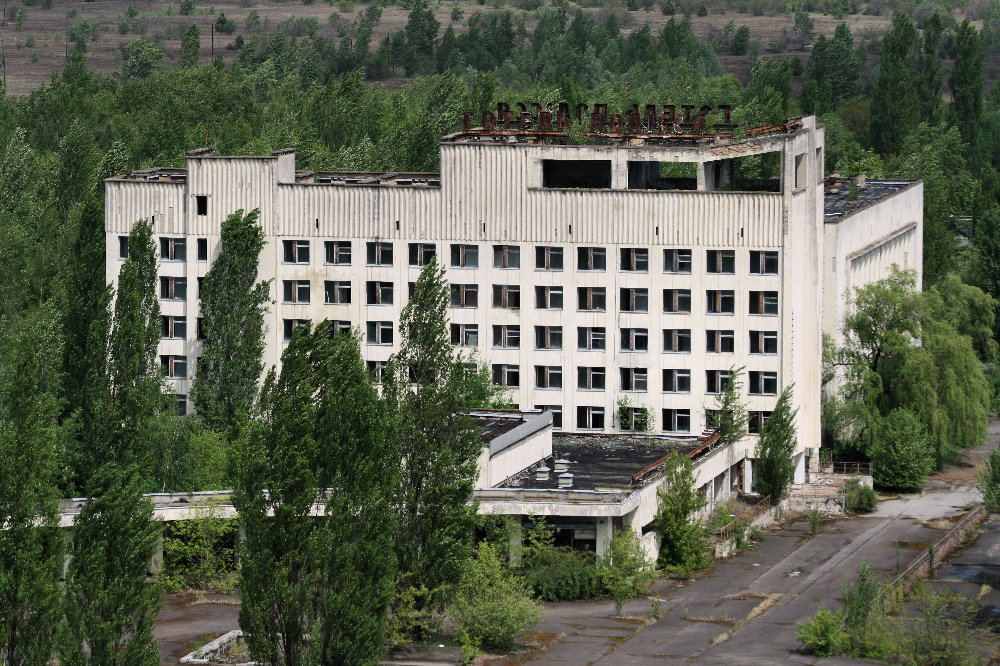
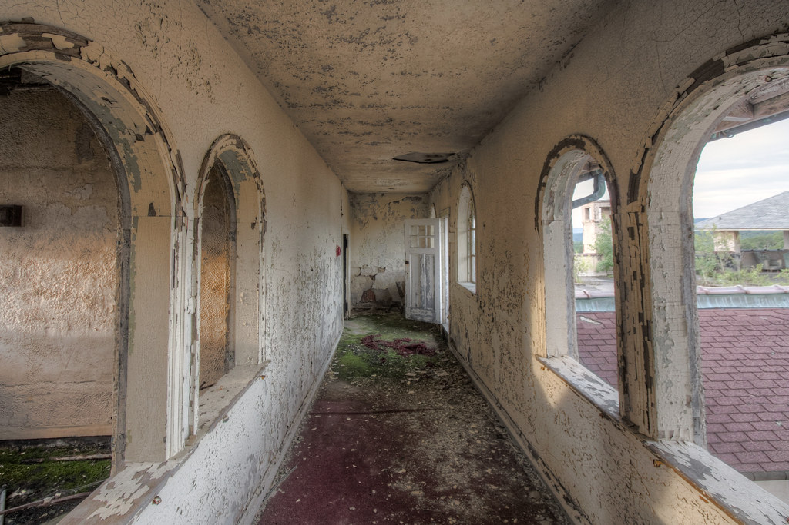

Bienvenue à l’Hôtel des Petits Dégâts, établissement de caractère où le charme du passé s’impose… faute d’entretien. Niché quelque part entre nostalgie et effondrement, l’hôtel vous invite à vivre une expérience authentique, loin des standards modernes de confort. Ici, chaque fissure raconte une histoire, chaque craquement vous murmure un souvenir, et chaque morceau de plâtre tombé devient un souvenir de vacances inoubliable. Une destination idéale pour les voyageurs en quête d’émotions fortes et de murs qui tiennent encore — à peu près.
Le hall d’entrée, majestueusement en ruine, accueille le visiteur avec la noblesse fatiguée des grands hôtels disparus. Son sol carrelé, partiellement visible sous la poussière, témoigne d’un âge d’or où l’on balayait encore. Les fauteuils éventrés invitent à la contemplation du plafond, ou de ce qu’il en reste. L’ambiance est tamisée — naturellement, puisque la moitié des ampoules ont pris leur retraite. C’est l’endroit parfait pour attendre… quelque-chose... peut-être...
Nos chambres, toutes uniques dans leur dégradation, vous promettent un séjour inoubliable. Certaines offrent le charme d'un ruissellement permanent, d’autres la fraîcheur d’un courant d’air franc, et quelques-unes la quiétude d’une vue murale inégalée. Le mobilier d’époque, patiné par la vie, vous rappellera qu’ici, rien ne se perd : tout prend de l'age avec élégance. À l’Hôtel des Petits Dégâts, nous ne visons pas la perfection — seulement la persévérance.
